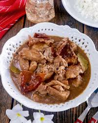

Back to Home
Lechon Paksiw Recipe

Lechon Paksiw is a Filipino dish made from leftover lechon (roast pig) that is simmered in a flavorful sauce made with vinegar, soy sauce, garlic, and bay leaves. It is a delicious way to use up any leftover lechon and is often served with steamed rice.
Ingredients:
- 2 cups leftover lechon, chopped
- 1/2 cup vinegar
- 1/4 cup soy sauce
- 5 cloves garlic, minced
- 2 bay leaves
- 1 tsp black peppercorns
- 1 cup water
Instructions:
- In a large pot, combine the chopped lechon, vinegar, soy sauce, garlic, bay leaves, black peppercorns, and water.
- Bring the mixture to a boil over medium-high heat. Once it starts boiling, reduce the heat to low and let it simmer for about 30 minutes to 1 hour, or until the flavors have melded together and the sauce has thickened slightly.
- Stir occasionally to prevent sticking and ensure even cooking. If the sauce reduces too much, you can add a little more water as needed.
- Once the flavors have melded together and the sauce has thickened to your liking, remove from heat and let it cool slightly before serving.
- Serve hot with steamed rice and enjoy!